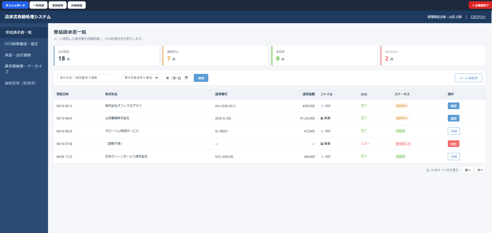
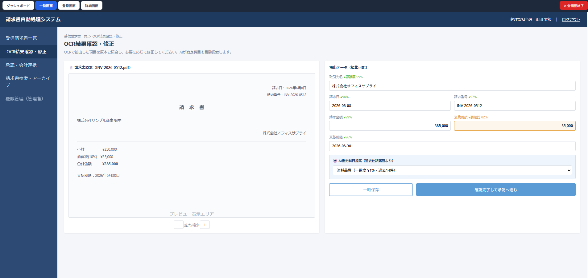
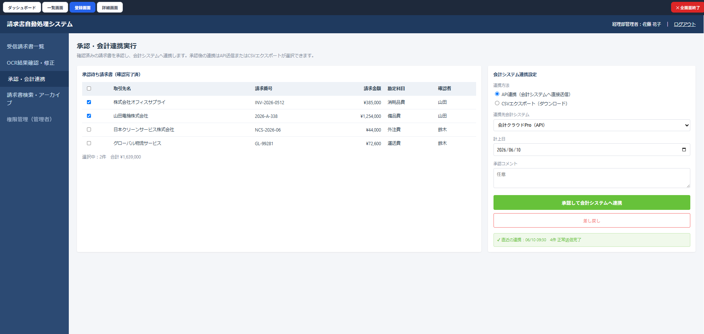
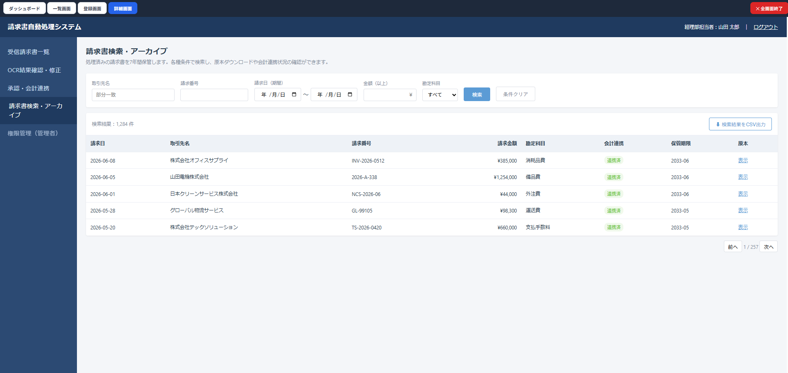
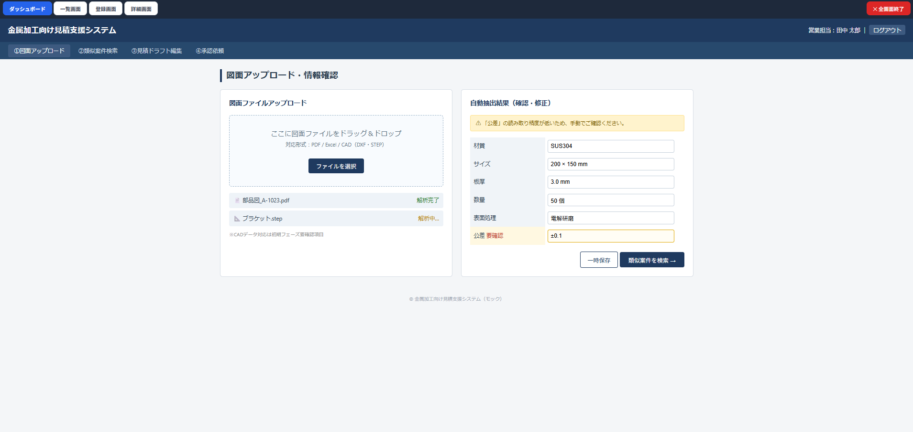
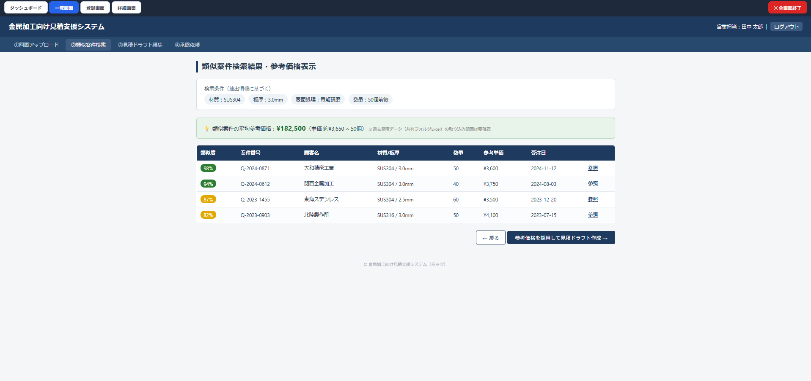
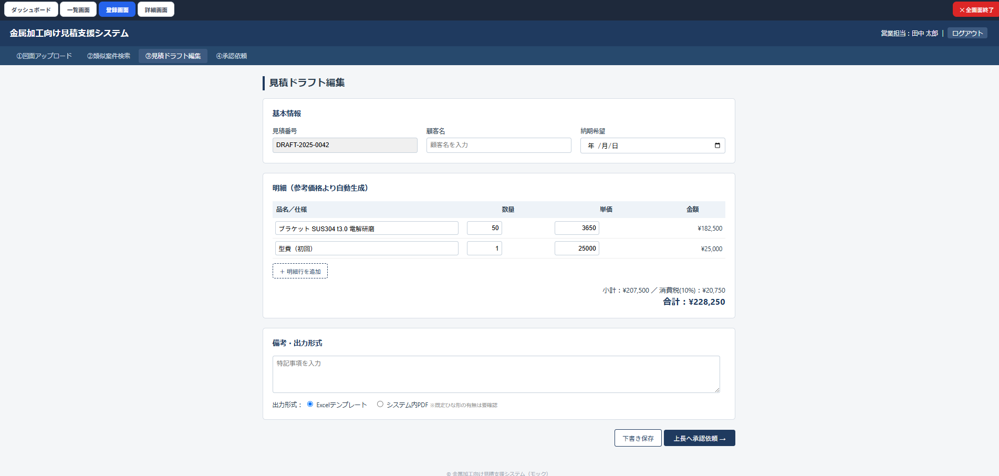
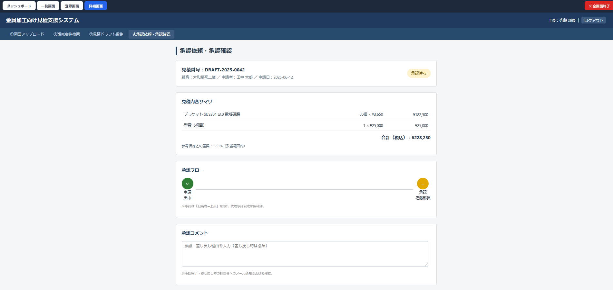

業務ヒアリングの文字起こしをAIが分析し
要件仮説・不足要件・HTML画面モックを一気通貫で生成
システム開発の提案・要件定義フェーズでは、ヒアリング後に手作業で要件をまとめ、画面イメージを作成する作業が発生します。これが時間もかかり、属人的になりがちでした。
ヒアリング中の発言をそのまま文字起こし。終了後ボタン1クリックでAIが要件分析〜モック生成まで自動実行します。
Web Speech APIでヒアリング中の発言をリアルタイムで記録。メモ不要でヒアリングに集中できます。
Playwright経由でclaude.aiに自動送信。要件仮説・不足要件をJSON形式で即生成。
AIが抽出した確認事項を画面上で回答。はい/いいえ/未定ボタンや自由入力で素早く対応。
回答内容を反映した4画面分の完全なHTMLモックを自動生成。そのままクライアント提示可能。
Step 1（要件分析）はPlaywright経由でclaude.aiを自動操作。Step 2（HTML生成）はclaude CLIで実行。APIキー・従量課金不要で、Claude Codeのサブスクリプションのみで動作します。
claude --bare -p）はプレーンテキスト出力のため Artifact が発生せず、この問題を根本解決しています。
以下は本ツールで実際に生成したHTMLモック画面のスクリーンショットです。ヒアリング内容に基づき、業務システムらしいデザインで4画面が自動生成されます。







